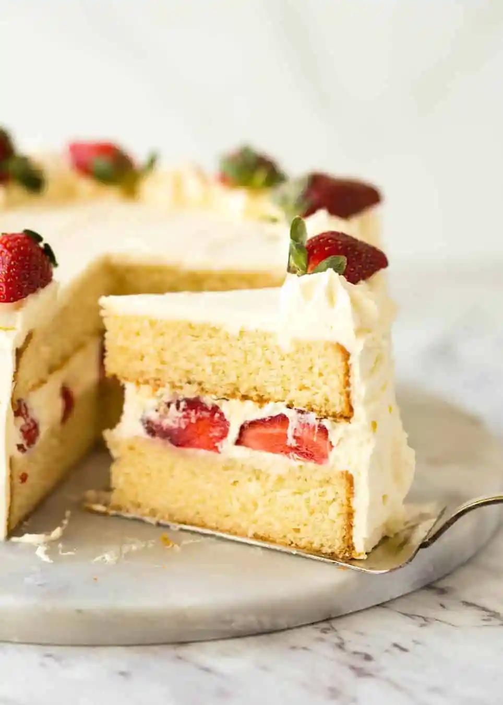

Sponge Cake!

Description:
The Sponge Cake is something that only resides in my imagination. It might be the fluffiest, lightest and sweetest cake
the mouth will ever get to taste. It represents the happiest moment, a shared moment. Just look at the palette of colors, so pretty.
At least that's what I think of it. So this recipe is meant to be the ultimate proof. To check if my expectations can be matched in reality.
Yes, you might think this recipe is going to be a cake, but don't get fooled by how innocent it looks. To get the maximum fluffiness and moist, you will need to have perfect
attention to detail. You might not get it at the first time, nor the second. It might happen just when all the Sponge Cake stars get aligned right in place.You'll likely lose all hope.
The thing is, anything is possible when you try hard enough. You can be the lucky one, the chosen. So let's get this cake started!
Ingredients:
- Baking spray
- 1 and a half cup of all-purpose flour
- 1 and a half teaspoons of baking powder
- 1 tablespoon of cornstarch
- A pinch of kosher salt
- 1 cup of granulated sugar
- Half a cup of unsalted butter, softened
- 2 large eggs
- 2 teaspoons of vanilla extract
- Half a cup of whole milk, room temperature
- Half a cup of strawberry preserves
- Whipped cream
- Fresh strawberries
Steps:
- Preheat the oven to 325F or 160C. Spray the baking spray on 2 round cake pans of 20cm.
- Sift flour, cornstarch and baking powder into bowl. Add salt and whisk.
- In a separate bowl, beat sugar and butter with a mixer for 3 to 4 minutes.
- Beat in the eggs, one by one. Add the vanilla extract.
- With the mixer in medium speed, add the flour mixture in 3 batches, alternating with milk. Beat until is completely combined.
- Divide the batter into the 2 pans previously prepared. Spread even with a spatula and tap into the counter to eliminate large bubbles.
- Bake about 18 to 22 minutes. Check with a toothpick to see if it's ready.
- Take the cakes out of the pan after 10 minutes of cooling. Then, let them sit in a wire rack for an hour.
- Place one cake in a serving plate and add the preserves on top. Spread the preserves evenly.
- Spread a layer of whipped cream on top of the preserves.
- Top with the remaining cake.
- Decorate with whipped cream and fresh strawberries